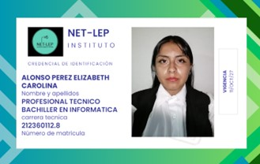

Tienes duda de quinees somos en el siguiente listado se mostraran nuestros nombres en el cual puedes consultar quienes somos y como surgió NET-LEP.
| INTEGRANTE | DESCRIPCIÓN |
|---|---|
Monroy Parra Bernardo
|
|
|  |
Alonso Pérez Elizabeth Carolina
|
Cortes Morales Felipe Alexis
|
|
Pérez Hinojosa Melani Aylin
|
|
Nieves Flores David Uriel
|
|
Morales Alvarez Axel Daniel
|
Es una historia bastante curiosa ya que empezó con un juego de palabras y una de ellas se formo
“NETLEP” cuyo significado en las palabras son networking y Conalep, si son demasiados busos
se
podrían dar la idea de cómo es que surgió la idea.
De esta forma empezamos a trabajar con esta empresa ficticia con la realización de la maqueta y el
proyecto transversal un largo camino que recorremos este equipo del 601 es como se logró este
objetivo
presentarles una página web a ustedes espectadores
© 2024 NET-LEP. Todos los derechos reservados.